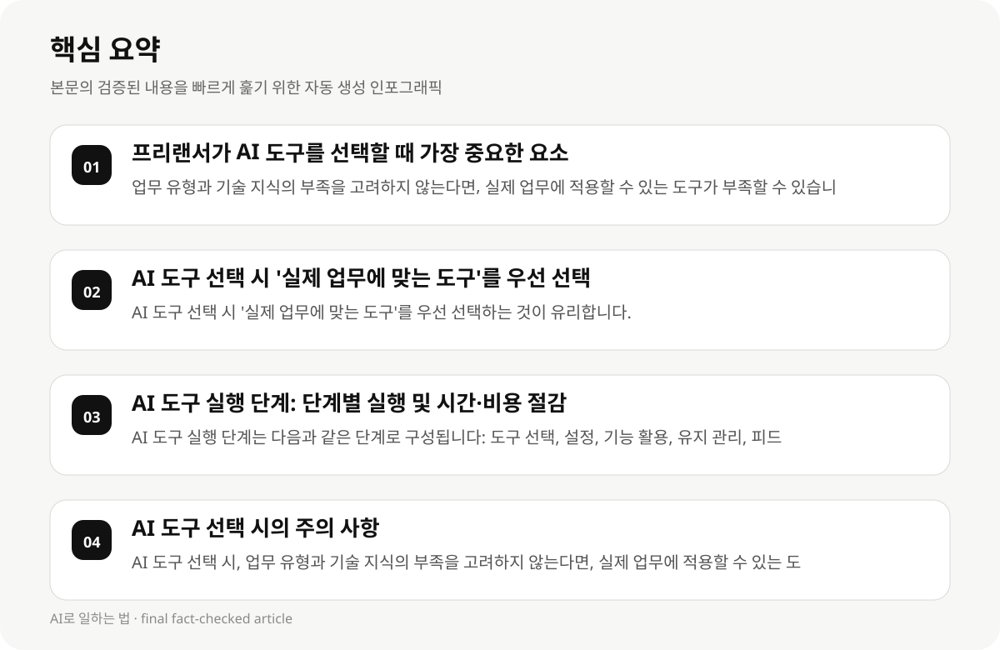

프리랜서가 AI 도구를 선택할 때 가장 중요한 요소 #
프리랜서가 AI 도구를 선택할 때 가장 중요한 요소는 업무 유형과 기술 지식의 부족을 고려하는 것입니다. AI 도구는 다양한 작업을 수행할 수 있지만, 업무의 특성에 맞는 도구를 선택하는 것이 중요합니다.
AI 도구의 가격이 가장 저렴한 도구를 선택하는 것이 유리하지만, 업무의 복잡성과 기술 지식의 부족을 고려하지 않는다면, 실제 업무에 적용할 수 있는 도구가 부족할 수 있습니다.
- 업무 유형과 기술 지식의 부족을 고려하지 않는다면, 실제 업무에 적용할 수 있는 도구가 부족할 수 있습니다.
- AI 도구의 가격이 가장 저렴한 도구를 선택하는 것이 유리하지만, 업무의 복잡성과 기술 지식의 부족을 고려하지 않는다면, 실제 업무에 적용할 수 있는 도구가 부족할 수 있습니다.
AI 도구 선택 시 '실제 업무에 맞는 도구'를 우선 선택하는 이유 #
AI 도구 선택 시 '실제 업무에 맞는 도구'를 우선 선택하는 것이 유리합니다. 이는 업무의 복잡성과 기술 지식의 부족을 고려하여, 도구가 실제 업무에 맞는 방식으로 활용될 수 있도록 합니다.
AI 도구는 다양한 기능을 제공하지만, 업무의 특성에 맞는 도구를 선택하지 않으면, 업무의 효율성과 비용 절감이 어려워질 수 있습니다.
- AI 도구 선택 시 '실제 업무에 맞는 도구'를 우선 선택하는 것이 유리합니다.
- AI 도구는 다양한 기능을 제공하지만, 업무의 특성에 맞는 도구를 선택하지 않으면, 업무의 효율성과 비용 절감이 어려워질 수 있습니다.
AI 도구 실행 단계: 단계별 실행 및 시간·비용 절감 #
AI 도구 실행 단계는 다음과 같은 단계로 구성됩니다: 도구 선택, 설정, 기능 활용, 유지 관리, 피드백 수집.
AI 도구 실행 단계는 시간과 비용을 절감하기 위해, 단일 도구를 선택하고, 필요한 기능만 활용하는 것이 중요합니다.
AI 도구 실행 단계는 단일 도구 선택 시 '가격이 가장 저렴한 도구'를 선택하는 것이 유리하지만, 업무의 복잡성과 기술 지식의 부족을 고려하지 않는다면, 실제 업무에 적용할 수 있는 도구가 부족할 수 있습니다.
- AI 도구 실행 단계는 다음과 같은 단계로 구성됩니다: 도구 선택, 설정, 기능 활용, 유지 관리, 피드백 수집.
- AI 도구 실행 단계는 시간과 비용을 절감하기 위해, 단일 도구를 선택하고, 필요한 기능만 활용하는 것이 중요합니다.
- AI 도구 실행 단계는 단일 도구 선택 시 '가격이 가장 저렴한 도구'를 선택하는 것이 유리하지만, 업무의 복잡성과 기술 지식의 부족을 고려하지 않는다면, 실제 업무에 적용할 수 있는 도구가 부족할 수 있습니다.

AI 도구 선택 시의 주의 사항 #
AI 도구 선택 시, 업무 유형과 기술 지식의 부족을 고려하지 않는다면, 실제 업무에 적용할 수 있는 도구가 부족할 수 있습니다.
AI 도구의 가격이 가장 저렴한 도구를 선택하는 것이 유리하지만, 업무의 복잡성과 기술 지식의 부족을 고려하지 않는다면, 실제 업무에 적용할 수 있는 도구가 부족할 수 있습니다.
AI 도구의 실행 단계는 '실제 업무에 맞는 도구'를 우선 선택하는 것이 유리하지만, 업무의 특성에 맞는 도구를 선택하지 않으면, 업무의 효율성과 비용 절감이 어려워질 수 있습니다.
- AI 도구 선택 시, 업무 유형과 기술 지식의 부족을 고려하지 않는다면, 실제 업무에 적용할 수 있는 도구가 부족할 수 있습니다.
- AI 도구의 가격이 가장 저렴한 도구를 선택하는 것이 유리하지만, 업무의 복잡성과 기술 지식의 부족을 고려하지 않는다면, 실제 업무에 적용할 수 있는 도구가 부족할 수 있습니다.
- AI 도구의 실행 단계는 '실제 업무에 맞는 도구'를 우선 선택하는 것이 유리하지만, 업무의 특성에 맞는 도구를 선택하지 않으면, 업무의 효율성과 비용 절감이 어려워질 수 있습니다.
AI 도구 활용의 성공 사례 #
AI 도구 활용의 성공 사례는 다음과 같습니다: 업무 유형에 맞는 도구를 선택하고, 필요한 기능만 활용하여 시간과 비용을 절감합니다.
AI 도구 활용의 성공 사례는 단일 도구를 선택하고, 필요한 기능만 활용하여 업무의 효율성과 비용 절감을 실현합니다.
AI 도구 활용의 성공 사례는 업무의 복잡성과 기술 지식의 부족을 고려하여, 실제 업무에 적용할 수 있는 도구를 선택합니다.
- AI 도구 활용의 성공 사례는 다음과 같습니다: 업무 유형에 맞는 도구를 선택하고, 필요한 기능만 활용하여 시간과 비용을 절감합니다.
- AI 도구 활용의 성공 사례는 단일 도구를 선택하고, 필요한 기능만 활용하여 업무의 효율성과 비용 절감을 실현합니다.
- AI 도구 활용의 성공 사례는 업무의 복잡성과 기술 지식의 부족을 고려하여, 실제 업무에 적용할 수 있는 도구를 선택합니다.
AI 도구 선택 시의 주의 사항 및 실패 사례 #
AI 도구 선택 시, 업무 유형과 기술 지식의 부족을 고려하지 않는다면, 실제 업무에 적용할 수 있는 도구가 부족할 수 있습니다.
AI 도구의 가격이 가장 저렴한 도구를 선택하는 것이 유리하지만, 업무의 복잡성과 기술 지식의 부족을 고려하지 않는다면, 실제 업무에 적용할 수 있는 도구가 부족할 수 있습니다.
AI 도구의 실행 단계는 '실제 업무에 맞는 도구'를 우선 선택하는 것이 유리하지만, 업무의 특성에 맞는 도구를 선택하지 않으면, 업무의 효율성과 비용 절감이 어려워질 수 있습니다.
- AI 도구 선택 시, 업무 유형과 기술 지식의 부족을 고려하지 않는다면, 실제 업무에 적용할 수 있는 도구가 부족할 수 있습니다.
- AI 도구의 가격이 가장 저렴한 도구를 선택하는 것이 유리하지만, 업무의 복잡성과 기술 지식의 부족을 고려하지 않는다면, 실제 업무에 적용할 수 있는 도구가 부족할 수 있습니다.
- AI 도구의 실행 단계는 '실제 업무에 맞는 도구'를 우선 선택하는 것이 유리하지만, 업무의 특성에 맞는 도구를 선택하지 않으면, 업무의 효율성과 비용 절감이 어려워질 수 있습니다.
AI 도구 활용의 성공 사례 및 실패 사례 #
AI 도구 활용의 성공 사례는 다음과 같습니다: 업무 유형에 맞는 도구를 선택하고, 필요한 기능만 활용하여 시간과 비용을 절감합니다.
AI 도구 활용의 성공 사례는 단일 도구를 선택하고, 필요한 기능만 활용하여 업무의 효율성과 비용 절감을 실현합니다.
AI 도구 활용의 성공 사례는 업무의 복잡성과 기술 지식의 부족을 고려하여, 실제 업무에 적용할 수 있는 도구를 선택합니다.
- AI 도구 활용의 성공 사례는 다음과 같습니다: 업무 유형에 맞는 도구를 선택하고, 필요한 기능만 활용하여 시간과 비용을 절감합니다.
- AI 도구 활용의 성공 사례는 단일 도구를 선택하고, 필요한 기능만 활용하여 업무의 효율성과 비용 절감을 실현합니다.
- AI 도구 활용의 성공 사례는 업무의 복잡성과 기술 지식의 부족을 고려하여, 실제 업무에 적용할 수 있는 도구를 선택합니다.
AI 도구 활용의 성공 사례 및 실패 사례 #
AI 도구 활용의 성공 사례는 다음과 같습니다: 업무 유형에 맞는 도구를 선택하고, 필요한 기능만 활용하여 시간과 비용을 절감합니다.
AI 도구 활용의 성공 사례는 단일 도구를 선택하고, 필요한 기능만 활용하여 업무의 효율성과 비용 절감을 실현합니다.
AI 도구 활용의 성공 사례는 업무의 복잡성과 기술 지식의 부족을 고려하여, 실제 업무에 적용할 수 있는 도구를 선택합니다.
- AI 도구 활용의 성공 사례는 다음과 같습니다: 업무 유형에 맞는 도구를 선택하고, 필요한 기능만 활용하여 시간과 비용을 절감합니다.
- AI 도구 활용의 성공 사례는 단일 도구를 선택하고, 필요한 기능만 활용하여 업무의 효율성과 비용 절감을 실현합니다.
- AI 도구 활용의 성공 사례는 업무의 복잡성과 기술 지식의 부족을 고려하여, 실제 업무에 적용할 수 있는 도구를 선택합니다.